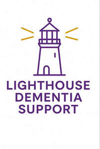

Trade Mark Journal No.2025/036 5 September 2025
UK00004250301 16 August 2025 (35,36,41,43)
Mark 1

Mark 2
- Class 35
- Arranging promotion of charitable fundraising events.
- Class 36
- Fundraising; Fund-raising; Fundraising and sponsorship; Providing monetary grants to charities; Providing information relating to charitable fundraising; Fundraising services; Fund-raising services; Arranging fundraising; Memorial fund raising; Fund raising services; Fund raising; Arranging business fundraising activities; Raising of funds for financial purposes; Financial sponsorship of sports events; Organisation of collections; Collections (Organisation of -).
- Class 41
- Organisation of galas; Arranging and conducting of entertainment events for charitable fundraising purposes; Organisation of concerts; Arranging and conducting of sports events for charitable purposes; Fetes (Organisation of -) for entertainment purposes; Fetes (Organisation of -) for educational purposes; Arranging and conducting of live entertainment events for charitable purposes; Arranging and conducting of entertainment events for charitable purposes; Arranging and conducting of educational events for charitable purposes; Organising of galas; Organisation of educational events; Organisation of cycling events; Organisation of competitions [education or entertainment]; Organisation of competitions (education or entertainment); Organisation of competitions for education or entertainment; Organisation of outings for entertainment; Organisation of sporting events; Sporting event organization; Organisation of festivals; Organisation of entertainment events; Fetes (Organisation of -) for recreational purposes; Organisation of music concerts; Organisation of sporting competitions; Organisation of entertainment competitions; Organising community sporting events; Organisation of educational shows; Organisation of musical concerts; Organisation of games; Festivals (Organisation of -) for educational purposes; Organisation of sports competitions; Organisation of entertainment services; Organisation of sports tournaments; Organisation of sporting events and competitions; Organisation of tournaments; Organization of education competitions; Organisation of musical events; Festivals (Organisation of -) for entertainment purposes; Organization of sporting events; Organization of competitions [education or entertainment]; Organization of competitions for education or entertainment; Organisation of fashion shows for entertainment purposes; Organisation of sporting activities and competitions; Organisation of shows.
- Class 43
- Charitable services, namely providing food and drink catering.
Katherine Haywood